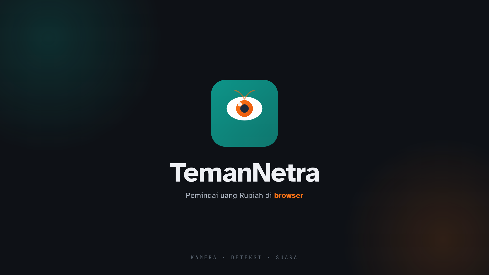
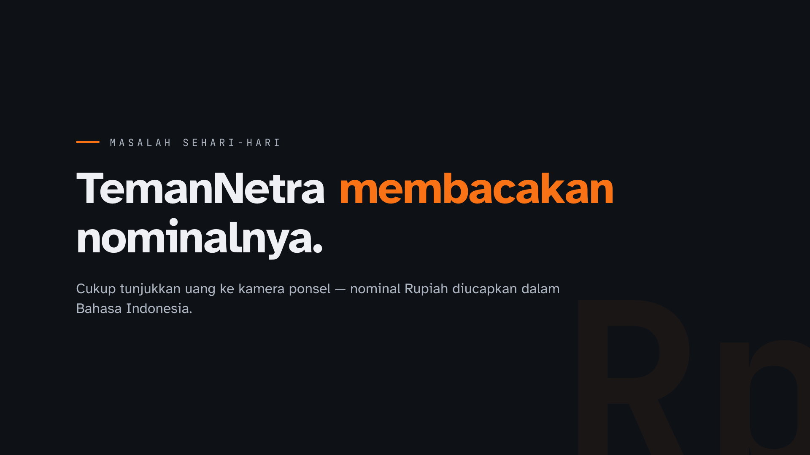
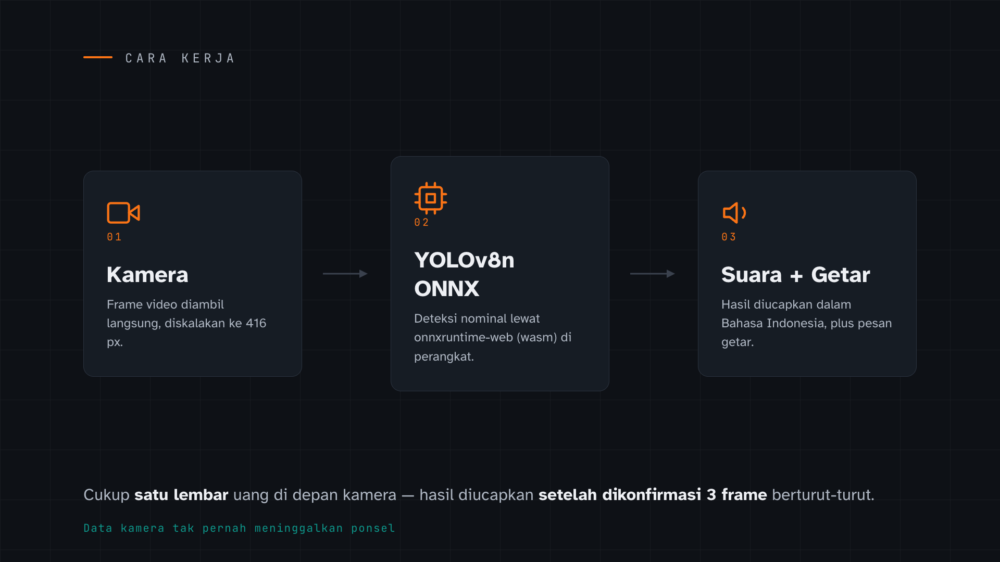
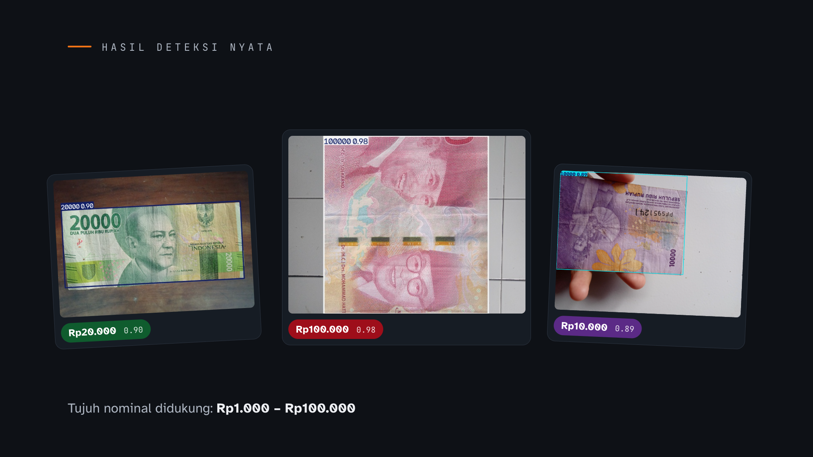
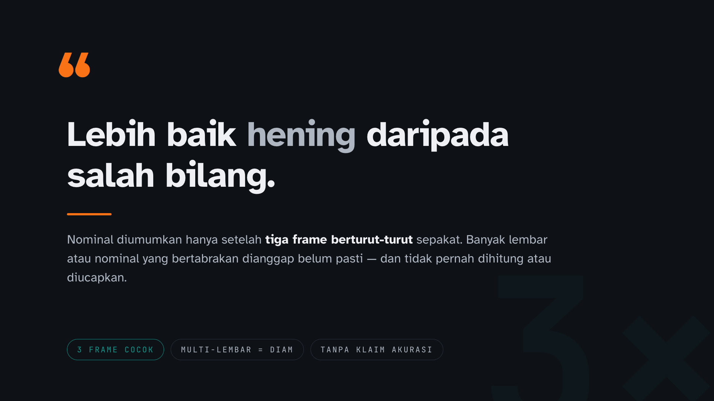
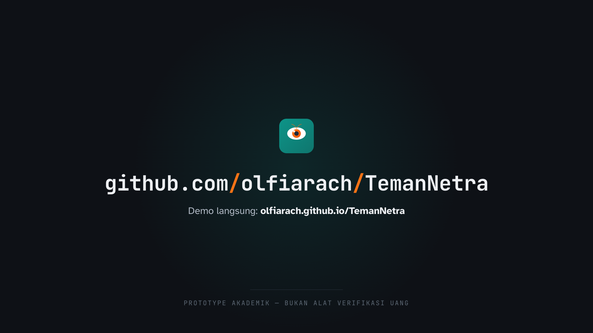

Mark asli repo memainkan koreografi 1300 ms dari motion_spec.md (card → note → lens → rays → lines), lalu lockup + wordmark.

Kalimat masalah dipecah per frasa, mendarat pada “TemanNetra membacakan nominalnya.” Kata kunci aksen oranye.

Tiga node alur: Kamera → YOLOv8n ONNX (onnxruntime-web) → Suara + getar. Garis penghubung menggambar; catatan privasi di bawah.

Tiga foto deteksi nyata dari repo (Rp20.000 0.90 · Rp100.000 0.98 · Rp10.000 0.89) masuk bertahap; kamera bergeser pelan antar panel.

“Lebih baik hening daripada salah bilang.” plus aturan konfirmasi 3 frame dan tiga badge prinsip.

URL repo + demo GitHub Pages, ditutup baris status jujur “prototype akademik — bukan alat verifikasi uang”.